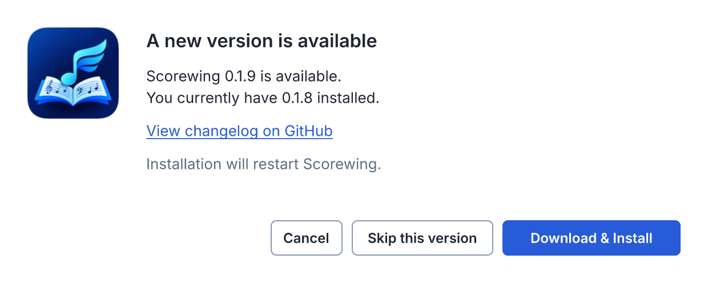
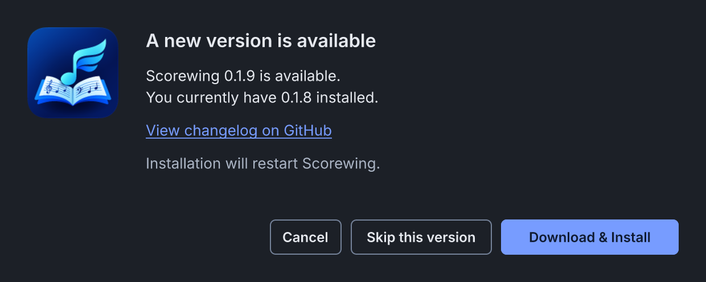
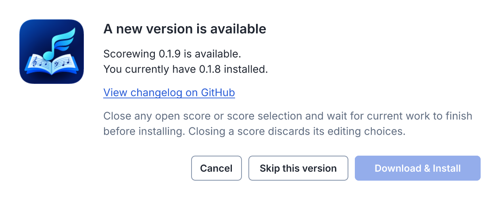

Scorewing update window
Revised design · 620 × 248 content area · sample versions · native title bar excluded



Revised design · 620 × 248 content area · sample versions · native title bar excluded


